第 17 章 图像分割与提取#
本章解决：把前景对象从背景中分离出来——图像分割（image segmentation）。阈值、轮廓、边缘检测这些"一刀切"的手段，在前景连片、背景复杂时不够用；本章给出两套半自动方案：分水岭算法（watershed algorithm）把灰度图当地形，用形态学、距离变换和连通域标注喂给算法几颗"种子"，让水漫堤成界；GrabCut 交互式前景提取只需一个矩形框（必要时补几笔掩模），靠高斯混合模型加图割迭代把前景抠出来。末尾以拓展形式补上 K-means 聚类分割，凑齐最常用的三种分割思路。
运行环境约定
本章代码引用本目录根下的素材（picture13.jpg、picture3.jpg、picture9.jpg），路径写作相对路径。运行时工作目录需为 数字图像处理-python 根目录，否则 imread 返回 None。原书用 water_coins.jpg（浅色桌面上的一把硬币）、lenacolor.png（512×512 的 lena）、my.bmp 和手绘模板 mask.png 演示，本章统一换成本目录素材：picture13.jpg 顶替 water_coins（深底亮币，阈值极性相反，币面深色字样要先填洞，改动处均在代码注释说明）、picture3.jpg 顶替 lenacolor（736×1110 人像，矩形框与模板坐标已按此图重设）、picture9.jpg 顶替 my.bmp、mask.png 由程序生成（原书用画笔工具手绘）。代码逻辑除注明处外一字未改，控制台打印的具体数值随素材不同而不同。
17.0 本章导图#
17.1 用分水岭算法实现图像分割与提取#
图像分割是图像处理中一种非常重要的操作。分水岭算法把图像形象地比喻为地理学上的地形表面来实现分割，效果非常好。
17.1.1 算法原理#
OpenCV 官网建议学习者阅读国立巴黎高等矿业学校图像处理实验室（The Image Processing Laboratory of MINES ParisTech）的 CMM（Centre for Mathematical Morphology）网站上关于分水岭算法的介绍和动画演示。下面做简单介绍。
任何一幅灰度图像，都可以看成地理学上的地形表面（topographic surface）：灰度值高的区域是山峰，灰度值低的区域是山谷。
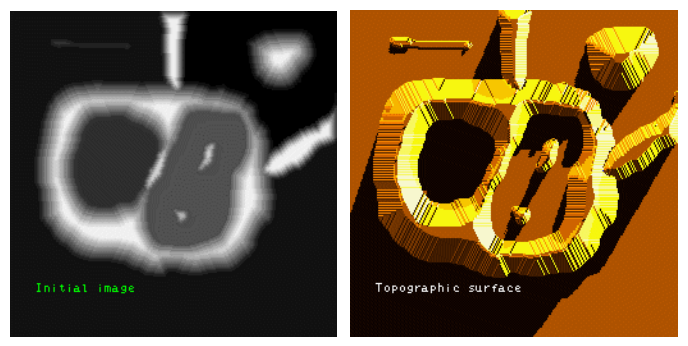
向每一个山谷中"灌注"不同颜色的水（这是 OpenCV 官网的表述）。随着水位不断升高，不同山谷的水就会汇集到一起。为了防止不同山谷的水交汇，需要在水流可能汇合的地方构建堤坝。这个过程把图像分成两个集合：集水盆地（catchment basin）和分水岭线（watershed line）。构建的堤坝就是分水岭线，也就是对原始图像的分割——这就是分水岭算法。
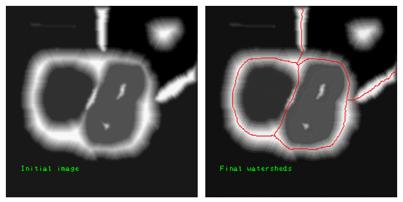
受噪声等因素影响，采用上述基础分水岭算法经常会得到过度分割（over-segmentation）的结果：图像被划分成一个个稠密的独立小块，分割失去了意义。图 17.3 中左图是电泳现象图像，右图是过度分割的结果，现象非常严重。
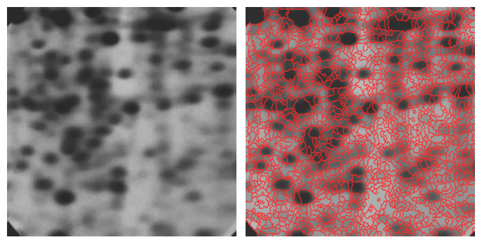
为了改善分割效果，人们提出了基于掩模的改进分水岭算法（marker-based watershed）：允许用户把认为是同一分割区域的部分标注出来（被标注的部分称为掩模，mask），算法处理时会把标注的部分当作同一个分割区域。可以试用微软 PowerPoint 的"删除背景"功能，加深对这一改进算法的理解。
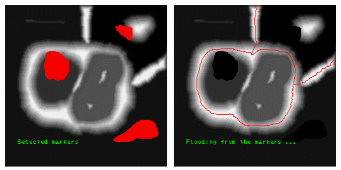
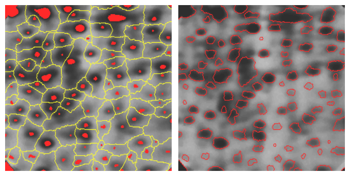
17.1.2 相关函数介绍#
在 OpenCV 中，用函数 cv2.watershed() 实现分水岭算法。具体实现中，还需要借助形态学函数、距离变换函数 cv2.distanceTransform() 和连通域标注函数 cv2.connectedComponents()。
1. 形态学函数回顾#
用分水岭算法分割前，要先做简单的形态学处理。
开运算是先腐蚀、后膨胀的操作，能够去除图像内的噪声。
在用分水岭算法处理图像前，要先使用开运算去除噪声，避免噪声对分割造成干扰。
通过形态学操作和减法运算还能获取图像的边界：原始图像减去它的腐蚀结果，剩下的一圈就是边界。
【例 17.1】使用形态学变换，获取一幅图像的边界信息，并观察效果。
# ===== 17.1.2 例 17.1：形态学 + 减法获取图像边界 =====
import cv2
import numpy as np
import matplotlib.pyplot as plt
o = cv2.imread("picture9.jpg", cv2.IMREAD_UNCHANGED) # 原书 my.bmp：黑底白色图形
k = np.ones((5, 5), np.uint8) # 5×5 全 1 结构元
e = cv2.erode(o, k) # 腐蚀：前景整体向内收缩一圈
b = cv2.subtract(o, e) # 原图减腐蚀图：差集就是一圈边界
plt.subplot(131) # 1 行 3 列的第 1 幅
plt.imshow(o) # 原始图像
plt.axis('off')
plt.subplot(132)
plt.imshow(e) # 腐蚀结果
plt.axis('off')
plt.subplot(133)
plt.imshow(b) # 边界图像
plt.axis('off')
plt.show() # 显示画布
运行程序，左图是原始图像，中间是对其腐蚀的结果，右图是原始图像减去腐蚀图像后得到的边界图像——比较准确地显示出前景对象的边界。
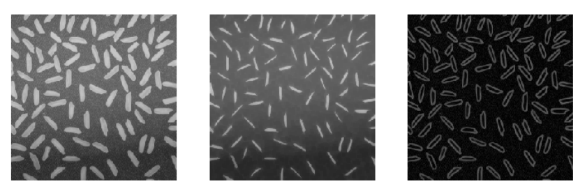
形态学操作只适用于比较简单的图像。如果图像内的前景对象存在连接，形态学操作就无法准确获取各个子图像的边界了。
2. 距离变换函数 distanceTransform#
图像内的各个子图没有连接时，直接用形态学腐蚀操作就能确定前景；子图连接在一起时，前景就难确定了。此时借助距离变换函数 cv2.distanceTransform() 可以方便地把前景对象提取出来。
距离变换（distance transform）计算二值图像内任意点到最近背景点的距离。一般情况下，函数计算的是图像内非零值像素点到最近的零值像素点的距离；像素点本身值为 0，则距离也为 0。
计算结果反映了各个像素与背景（值为 0 的像素点）的距离关系：
- 前景对象的中心（质心）距离零值像素较远，得到较大的值；
- 前景对象的边缘距离零值像素较近，得到较小的值。
对计算结果进行阈值化，就可以得到图像内子图的中心、骨架等信息。距离变换可以用于计算对象的中心，还能细化轮廓、获取图像前景等。
语法格式为：
| 参数 | 含义 |
|---|---|
| src | 8 位单通道的二值图像 |
| distanceType | 距离类型参数，见表 17-1 |
| maskSize | 掩模的尺寸，见表 17-2。distanceType 为 cv2.DIST_L1 或 cv2.DIST_C 时强制为 3（设为 3 与设为 5 及更大值没有区别） |
| dstType | 目标图像的类型，默认值为 CV_32F |
| dst | 计算得到的目标图像，8 位或 32 位浮点数，尺寸与 src 相同 |
表 17-1 distanceType 参数的值及含义：
| 参数值 | 含义 |
|---|---|
cv2.DIST_USER |
用户自定义距离 |
cv2.DIST_L1 |
曼哈顿距离：\(\lvert x_1-x_2\rvert + \lvert y_1-y_2\rvert\) |
cv2.DIST_L2 |
简单欧几里得距离（欧氏距离） |
cv2.DIST_C |
切比雪夫距离：\(\max(\lvert x_1-x_2\rvert, \lvert y_1-y_2\rvert)\) |
cv2.DIST_L12 |
L1-L2 度量：\(2(\sqrt{1 + x^2/2} - 1)\) |
cv2.DIST_FAIR |
\(c^2(\lvert x\rvert/c - \log(1 + \lvert x\rvert/c))\)，其中 \(c = 1.3998\) |
cv2.DIST_WELSCH |
\(c^2/2\,(1 - \exp(-(x/c)^2))\)，其中 \(c = 2.9846\) |
cv2.DIST_HUBER |
\(\lvert x\rvert < c\) 时取 \(x^2/2\)，否则取 \(c(\lvert x\rvert - c/2)\)，其中 \(c = 1.345\) |
表 17-2 maskSize 的值：
| 参数值 | 对应整数值 |
|---|---|
cv2.DIST_MASK_3 |
3 |
cv2.DIST_MASK_5 |
5 |
cv2.DIST_MASK_PRECISE |
0（精确计算，仅 DIST_L2 支持） |
【例 17.2】使用距离变换函数 cv2.distanceTransform()，计算一幅图像的确定前景，并观察效果。
# ===== 17.1.2 例 17.2：距离变换获取确定前景 =====
import numpy as np
import cv2
import matplotlib.pyplot as plt
img = cv2.imread('picture13.jpg') # 原书 water_coins.jpg
gray = cv2.cvtColor(img, cv2.COLOR_BGR2GRAY) # 转灰度
img = cv2.cvtColor(img, cv2.COLOR_BGR2RGB) # matplotlib 按 RGB 显示，先转序
ishow = img.copy() # 留一份原始图用于展示
ret, thresh = cv2.threshold(gray, 0, 255,
cv2.THRESH_BINARY + cv2.THRESH_OTSU) # Otsu 自动阈值。picture13 是深底亮币，用 BINARY；
# 原书 water_coins 是浅底暗币，用 THRESH_BINARY_INV
closing = cv2.morphologyEx(thresh, cv2.MORPH_CLOSE,
np.ones((15, 15), np.uint8)) # 素材适配：闭运算填掉币面深色"5角"字样留下的洞
kernel = np.ones((3, 3), np.uint8)
opening = cv2.morphologyEx(closing, cv2.MORPH_OPEN,
kernel, iterations=2) # 开运算×2 去噪（原书对 thresh 直接开运算）
dist_transform = cv2.distanceTransform(opening, cv2.DIST_L2, 5) # 距离变换
ret, fore = cv2.threshold(dist_transform,
0.7 * dist_transform.max(), 255, 0) # 以 0.7 倍最大值做阈值化，得到确定前景
plt.subplot(131) # 1 行 3 列第 1 幅
plt.imshow(ishow) # 原始图像
plt.axis('off')
plt.subplot(132)
plt.imshow(dist_transform) # 距离图像
plt.axis('off')
plt.subplot(133)
plt.imshow(fore) # 阈值化后的确定前景
plt.axis('off')
plt.show()
左图是原始图像，中间是距离变换得到的距离图像，右图是对距离图像阈值化后的结果。右图比较准确地显示出左图内的"确定前景"（sure foreground）——通常指前景对象的中心。之所以认为这些点是确定前景，是因为它们距离背景点足够远，都是距离大于固定阈值（0.7×dist_transform.max()）的点。
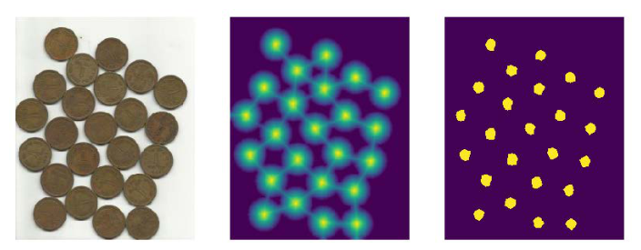
拓展：0.7 这个系数在权衡什么
阈值系数决定"确定前景"的松紧：系数取大（接近 1），只留下离边界非常远的点，前景可能碎成多块；系数取小，相邻物体的确定前景会粘连成一片，分水岭就失去了种子。0.7×max 是教程通用的经验值——本例 picture13 在 0.7 时正好得到 15 个与硬币一一对应的连通块。实际使用时可以在 0.5~0.8 之间按粘连/碎块情况微调。
3. 确定未知区域#
形态学的膨胀操作能把前景"膨胀放大"。前景放大后，背景就被"压缩"，此时得到的背景一定小于实际背景——是不包含前景的"确定背景"（sure background），记作 B。
距离变换加阈值化得到"确定前景"（记作 F）。有了确定前景 F 和确定背景 B，剩下的区域就是未知区域（unknown region）UN——这正是分水岭算法要进一步明确的区域。
针对一幅图像 O，未知区域定义为：
整理一下，写成可以逐步计算的形式：
上式中的"图像 O − 确定背景 B"，通过对图像进行形态学的膨胀操作得到。
【例 17.3】标注一幅图像的确定前景、确定背景及未知区域。
# ===== 17.1.2 例 17.3：确定背景、确定前景、未知区域 =====
import numpy as np
import cv2
import matplotlib.pyplot as plt
img = cv2.imread('picture13.jpg')
gray = cv2.cvtColor(img, cv2.COLOR_BGR2GRAY) # 转灰度
img = cv2.cvtColor(img, cv2.COLOR_BGR2RGB) # 转 RGB 供 matplotlib 显示
ishow = img.copy() # 原始图像副本
ret, thresh = cv2.threshold(gray, 0, 255,
cv2.THRESH_BINARY + cv2.THRESH_OTSU) # Otsu 阈值分割（深底亮币用 BINARY）
closing = cv2.morphologyEx(thresh, cv2.MORPH_CLOSE,
np.ones((15, 15), np.uint8)) # 素材适配：填掉币面字样的洞
kernel = np.ones((3, 3), np.uint8)
opening = cv2.morphologyEx(closing, cv2.MORPH_OPEN,
kernel, iterations=2) # 开运算去噪
bg = cv2.dilate(opening, kernel, iterations=3) # 膨胀×3：前景放大，背景被压缩
# bg 的背景部分 = 确定背景 B
dist = cv2.distanceTransform(opening, cv2.DIST_L2, 5) # 距离变换
ret, fore = cv2.threshold(dist, 0.7 * dist.max(), 255, 0) # 确定前景 F
fore = np.uint8(fore) # 转成 uint8 方便后续运算
un = cv2.subtract(bg, fore) # UN = (O - B) - F
plt.subplot(221) # 2 行 2 列第 1 幅
plt.imshow(ishow) # 原始图像
plt.axis('off')
plt.subplot(222)
plt.imshow(bg) # 膨胀结果
plt.axis('off')
plt.subplot(223)
plt.imshow(fore) # 确定前景
plt.axis('off')
plt.subplot(224)
plt.imshow(un) # 未知区域
plt.axis('off')
plt.show()
左上角是原始图像 ishow；右上角是对 ishow 膨胀后得到的 bg，其背景部分是确定背景，前景部分是"原始图像 − 确定背景"；左下角是确定前景 fore；右下角中的小圆环就是未知区域 un，由 bg 与 fore 相减得到。
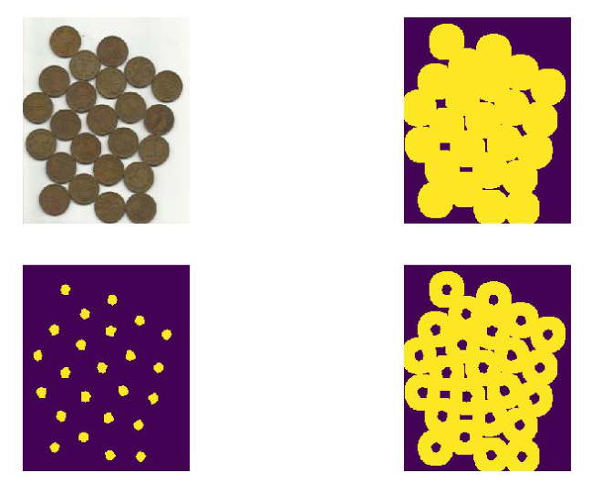
注意右上角图像 bg 中：前景的一个个小圆是"原始图像 − 确定背景"部分，而不是"确定背景"；其背景部分才是"确定背景"。
4. 函数 connectedComponents#
明确确定前景后，就可以对确定前景图像进行标注了。在 OpenCV 中，用函数 cv2.connectedComponents() 进行标注。该函数把背景标注为 0，其他对象用从 1 开始的正整数标注。
语法格式为：
| 参数/返回值 | 含义 |
|---|---|
| image | 8 位单通道的待标注图像 |
| retval | 返回的标注数量 |
| labels | 标注的结果图像 |
【例 17.4】使用函数 cv2.connectedComponents() 标注一幅图像，并观察标注效果。
# ===== 17.1.2 例 17.4：连通域标注确定前景 =====
import numpy as np
import cv2
import matplotlib.pyplot as plt
img = cv2.imread('picture13.jpg')
gray = cv2.cvtColor(img, cv2.COLOR_BGR2GRAY) # 转灰度
img = cv2.cvtColor(img, cv2.COLOR_BGR2RGB) # 转 RGB 显示
ishow = img.copy() # 原始图像副本
ret, thresh = cv2.threshold(gray, 0, 255,
cv2.THRESH_BINARY + cv2.THRESH_OTSU) # Otsu 阈值分割
closing = cv2.morphologyEx(thresh, cv2.MORPH_CLOSE,
np.ones((15, 15), np.uint8)) # 素材适配：填洞
kernel = np.ones((3, 3), np.uint8)
opening = cv2.morphologyEx(closing, cv2.MORPH_OPEN,
kernel, iterations=2) # 开运算去噪
sure_bg = cv2.dilate(opening, kernel, iterations=3) # 确定背景（本例未直接使用）
dist_transform = cv2.distanceTransform(opening, cv2.DIST_L2, 5) # 距离变换
ret, fore = cv2.threshold(dist_transform,
0.7 * dist_transform.max(), 255, 0) # 确定前景
fore = np.uint8(fore) # 转 uint8
ret, markers = cv2.connectedComponents(fore) # 连通域标注：背景 0，对象 1 起
print(ret) # 打印标注数量（含背景）
plt.subplot(131)
plt.imshow(ishow) # 原始图像
plt.axis('off')
plt.subplot(132)
plt.imshow(fore) # 确定前景的中心点图像
plt.axis('off')
plt.subplot(133)
plt.imshow(markers) # 标注结果
plt.axis('off')
plt.show()
左图是原始图像 ishow，中间是距离变换得到的前景中心点图像 fore，右图是对中心点图像标注后的结果 markers——每个确定前景的中心被标成不同的颜色（不同数值）。
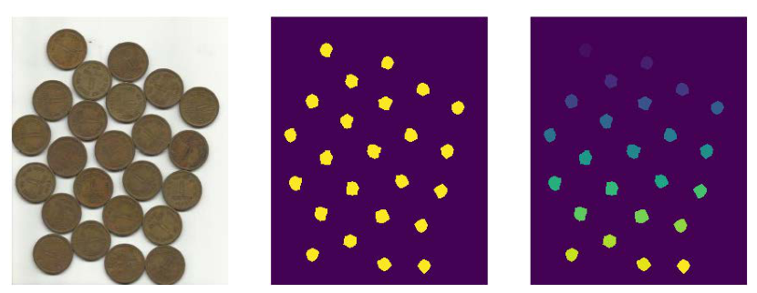
函数 cv2.connectedComponents() 标注时，数值对应关系为：
- 数值 0 代表背景区域；
- 从数值 1 开始的值代表不同的前景区域。
但在分水岭算法中，标注值 0 代表未知区域。所以要对标注结果进行调整：把结果整体加 1。处理后：
- 数值 1 代表背景区域；
- 从数值 2 开始的值代表不同的前景区域。
为了使用分水岭算法，还需要把已经计算出来的未知区域标注为 0。关键代码为：
【例 17.5】对标注结果进行修正，使未知区域被标注为 0，并观察标注效果。
# ===== 17.1.2 例 17.5：标注修正，未知区域置 0 =====
import numpy as np
import cv2
import matplotlib.pyplot as plt
img = cv2.imread('picture13.jpg')
gray = cv2.cvtColor(img, cv2.COLOR_BGR2GRAY) # 转灰度
img = cv2.cvtColor(img, cv2.COLOR_BGR2RGB) # 转 RGB 显示
ishow = img.copy()
ret, thresh = cv2.threshold(gray, 0, 255,
cv2.THRESH_BINARY + cv2.THRESH_OTSU) # Otsu 阈值分割
closing = cv2.morphologyEx(thresh, cv2.MORPH_CLOSE,
np.ones((15, 15), np.uint8)) # 素材适配：填洞
kernel = np.ones((3, 3), np.uint8)
opening = cv2.morphologyEx(closing, cv2.MORPH_OPEN,
kernel, iterations=2) # 开运算去噪
sure_bg = cv2.dilate(opening, kernel, iterations=3) # 确定背景
dist_transform = cv2.distanceTransform(opening, cv2.DIST_L2, 5)
ret, fore = cv2.threshold(dist_transform,
0.7 * dist_transform.max(), 255, 0) # 确定前景
fore = np.uint8(fore)
ret, markers1 = cv2.connectedComponents(fore) # 直接标注的结果
foreAdv = fore.copy() # 复制一份确定前景
unknown = cv2.subtract(sure_bg, foreAdv) # 未知区域 = 确定背景 - 确定前景
ret, markers2 = cv2.connectedComponents(foreAdv) # 重新标注
markers2 = markers2 + 1 # 整体加 1：1 是背景，2 起是前景
markers2[unknown == 255] = 0 # 未知区域置 0
plt.subplot(121) # 1 行 2 列第 1 幅
plt.imshow(markers1) # 修正前
plt.axis('off')
plt.subplot(122)
plt.imshow(markers2) # 修正后
plt.axis('off')
plt.show()
左图是直接标注的结果，右图是修正后的标注结果。对比可见，右图在前景边缘（未知区域）做了标注，每个确定前景都有一个黑色边缘——这个边缘就是被标注的未知区域。受对比度影响，纸质书上可能不明显，运行代码在屏幕上观察更清楚。
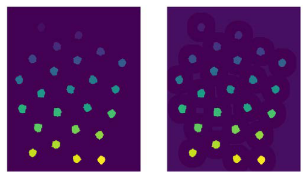
5. 函数 cv2.watershed()#
完成上述处理后，就可以用分水岭算法对预处理结果进行分割了。OpenCV 中实现分水岭算法的函数是 cv2.watershed()，语法格式为：
| 参数/返回值 | 含义 |
|---|---|
| image | 输入图像，必须是 8 位三通道图像。使用前必须先用正数大致勾画出期望分割的区域：每个分割区域标注为 1、2、3 等，尚未确定的区域标注为 0。可以把标注区域理解为分水岭分割的"种子"区域 |
| markers | 32 位单通道的标注结果，与 image 大小相等。每个像素要么被设置为初期的"种子值"，要么被设置为 -1 表示边界 |
原书笔误：markers 不能省略
原书语法说明最后写"markers 可以省略"。在 OpenCV 的 Python 接口中 cv2.watershed(image, markers) 的两个参数都是必填的，不存在省略 markers 的调用方式；markers（32 位单通道标注图）正是算法赖以工作的种子输入。
拓展：-1 边界只出现在区域之间
watershed 返回后，-1 只写在不同分割区域交界处的像素上：相邻两个种子泛洪相遇的地方。背景最外圈、以及某个区域自己独占的边缘不会有 -1。所以 img[markers == -1] = [0, 255, 0] 画出的是"区域之间的分界线"，而不是整个轮廓。另外 watershed 会直接修改传入的 markers 数组（就地写入），返回值与传入值是同一个数组。
17.1.3 分水岭算法图像分割实例#
结合前面的知识，用分水岭算法做图像分割。基本步骤为：
- 通过形态学开运算对原始图像 O 去噪。
- 通过膨胀操作获取"确定背景 B"。需要注意，这里得到"原始图像 − 确定背景"即可。
- 利用距离变换函数
cv2.distanceTransform()对原始图像进行运算，并对其进行阈值处理，得到"确定前景 F"。 - 计算未知区域 UN（UN = O − B − F）。
- 利用函数
cv2.connectedComponents()对原始图像 O 进行标注。 - 对函数
cv2.connectedComponents()的标注结果进行修正。 - 使用分水岭函数完成对图像的分割。
原书笔误：步骤 2 不是腐蚀
原书步骤 2 写"通过腐蚀操作获取确定背景 B"，与原书例 17.3、例 17.6 的代码 cv2.dilate(opening, ...) 不符——确定背景是膨胀结果（前景放大后）剩下的背景部分，膨胀才是"图像 O − 确定背景"的获取方式。
【例 17.6】使用分水岭算法对一幅图像进行分割，并观察分割效果。
# ===== 17.1.3 例 17.6：分水岭算法完整分割流程 =====
import numpy as np
import cv2
import matplotlib.pyplot as plt
img = cv2.imread('picture13.jpg') # 原书 water_coins.jpg
gray = cv2.cvtColor(img, cv2.COLOR_BGR2GRAY) # 转灰度
img = cv2.cvtColor(img, cv2.COLOR_BGR2RGB) # 转 RGB 显示
ishow = img.copy() # 留一份原始图
ret, thresh = cv2.threshold(gray, 0, 255,
cv2.THRESH_BINARY + cv2.THRESH_OTSU) # 步骤 0：Otsu 二值化（深底亮币用 BINARY）
closing = cv2.morphologyEx(thresh, cv2.MORPH_CLOSE,
np.ones((15, 15), np.uint8)) # 素材适配：闭运算填掉币面深色字样的洞
kernel = np.ones((3, 3), np.uint8)
opening = cv2.morphologyEx(closing, cv2.MORPH_OPEN,
kernel, iterations=2) # 步骤 1：开运算去噪
sure_bg = cv2.dilate(opening, kernel, iterations=3) # 步骤 2：膨胀得到确定背景 B
dist_transform = cv2.distanceTransform(opening, cv2.DIST_L2, 5)
ret, sure_fg = cv2.threshold(dist_transform,
0.7 * dist_transform.max(), 255, 0) # 步骤 3：距离变换 + 阈值化得到确定前景 F
sure_fg = np.uint8(sure_fg) # 转 uint8
unknown = cv2.subtract(sure_bg, sure_fg) # 步骤 4：未知区域 UN = (O - B) - F
ret, markers = cv2.connectedComponents(sure_fg) # 步骤 5：对确定前景标注
markers = markers + 1 # 步骤 6a：整体加 1，让背景=1、前景从 2 起
markers[unknown == 255] = 0 # 步骤 6b：未知区域置 0
markers = cv2.watershed(img, markers) # 步骤 7：分水岭分割，边界写 -1
img[markers == -1] = [0, 255, 0] # 把边界涂成绿色
plt.subplot(121) # 1 行 2 列第 1 幅
plt.imshow(ishow) # 原始图像
plt.axis('off')
plt.subplot(122)
plt.imshow(img) # 分割结果：绿色为分割线
plt.axis('off')
plt.show()
素材适配：picture13.jpg 的两处调整
- 阈值极性：原书 water_coins.jpg 是浅色桌面上的暗色硬币，
THRESH_BINARY_INV+OTSU把硬币变成白色前景；picture13.jpg 是深色底上的亮色硬币，极性相反，改用THRESH_BINARY+OTSU。用 INV 会把背景当成前景，整条流水线输出全是噪声。 - 闭运算填洞：picture13 的币面印有深色"5角"字样，Otsu 会把字样当成背景，在前景里留洞，干扰距离变换。开运算之前先用 15×15 结构元做一次闭运算把洞填上。实跑结果：距离阈值化得到 15 个确定前景连通块，与图中 15 枚硬币一一对应，分水岭把每枚硬币都单独分割出来。
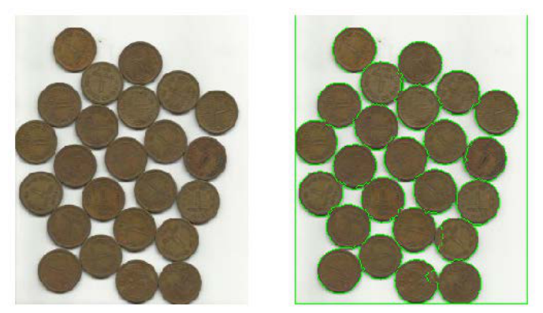
17.2 交互式前景提取#
经典的前景提取技术主要使用纹理（颜色）信息，如魔术棒（magic wand）工具；或根据边缘（对比度）信息，如智能剪刀（intelligent scissors）等完成。2004 年，微软研究院（剑桥）的 Rother 等人在论文 GrabCut: Interactive Foreground Extraction Using Iterated Graph Cuts 中提出了交互式前景提取（interactive foreground extraction）技术：仅需要很少的交互操作，就能准确地提取出前景图像。
开始提取前景时，先用一个矩形框指定前景所在的大致位置范围，然后不断迭代地分割，直到达到最好的效果。处理后效果可能并不理想——前景没有提取出来，或者背景被提取为前景。此时需要用户干预：在原始图像的副本中（也可以是与原始图像大小相等的任意一幅图像），用白色标注要提取为前景的区域，用黑色标注要作为背景的区域，然后把标注后的图像作为掩模，让算法继续迭代提取前景，得到最终结果。
PowerPoint 2016 提供了"删除背景"功能：用户在图像上标注需要保留和删除的部分，让 PowerPoint 完成前景提取。试用它有助于理解交互式前景提取中掩模的使用方式。
GrabCut 算法的具体实施过程：
- 将前景所在的大致位置用矩形框标注出来。矩形框框出的仅是前景的大致位置，其中既包含前景又包含背景，所以该区域实际上是未确定区域；该区域以外的部分被认为是"确定背景"。
- 根据矩形框外部的"确定背景"数据，区分矩形框区域内的前景和背景。
- 用高斯混合模型（Gaussian Mixture Model, GMM）对前景和背景建模。GMM 会根据用户的输入学习并创建新的像素分布；对未分类的像素（可能是背景也可能是前景），根据其与已知分类像素（前景和背景）的关系进行分类。
- 根据像素分布情况生成一幅图（graph）：图中的节点就是各个像素点。除像素点之外还有两个节点——前景节点和背景节点。所有前景像素都与前景节点相连，所有背景像素都与背景节点相连；每个像素连到前景节点或背景节点的边权由该像素是前景或背景的概率决定。
- 图中每个像素除了与前景/背景节点相连外，彼此之间也存在连接。两个像素之间边的权值由它们的相似性决定：颜色越接近，权值越大。
- 完成节点连接后，问题变成在一幅连通的图上根据各自的边权关系进行切割，把不同的点划分为前景节点和背景节点。
- 不断重复上述过程，直至分类收敛为止。
在 OpenCV 中，实现交互式前景提取的函数是 cv2.grabCut()，语法格式为：
| 参数/返回值 | 含义 |
|---|---|
| img | 输入图像，要求是 8 位 3 通道 |
| mask | 掩模图像，8 位单通道。用于确定前景区域、背景区域和不确定区域，可以取 4 种值（见下表） |
| rect | 包含前景对象的区域 (x, y, w, h)：左上角像素的 x、y 坐标及区域的宽、高。区域外的部分被认为是"确定背景"，务必让前景完整落在 rect 内，否则框外的前景不会被提取。前景位于右下方且不想判断原始图像大小时，w、h 可以直接用很大的值。使用掩模模式时，该值设置为 None。只有 mode 为矩形模式 cv2.GC_INIT_WITH_RECT 时 rect 才有意义 |
| bgdModel | 算法内部使用的数组，创建大小为 (1, 65) 的 numpy.float64 数组即可 |
| fgdModel | 算法内部使用的数组，创建大小为 (1, 65) 的 numpy.float64 数组即可 |
| iterCount | 迭代次数 |
| mode | 迭代模式，见表 17-3 |
参数 mask 的 4 种取值：
| 取值 | 含义 |
|---|---|
cv2.GC_BGD |
确定背景，也可用数值 0 表示 |
cv2.GC_FGD |
确定前景，也可用数值 1 表示 |
cv2.GC_PR_BGD |
可能的背景，也可用数值 2 表示 |
cv2.GC_PR_FGD |
可能的前景，也可用数值 3 表示 |
最后使用掩模提取前景时，会把 0 和 2 合并为背景（均当作 0 处理），把 1 和 3 合并为前景（均当作 1 处理）。通常用白色笔刷和黑色笔刷在掩模图像上做标记，再通过转换把标记映射到这 4 个值上。
原书笔误：白与黑的映射写反了
原书此处写"通过转换将其中的白色像素设置为 0，黑色像素设置为 1"，方向反了。正确对应关系与原书例 17.8 的代码一致：白色（255）映射为 1（确定前景），黑色（0）映射为 0（确定背景）。
表 17-3 mode 的值及含义：
| 参数 mode 的值 | 含义 |
|---|---|
cv2.GC_INIT_WITH_RECT |
使用矩形模板 |
cv2.GC_INIT_WITH_MASK |
使用自定义模板。注意，cv2.GC_INIT_WITH_RECT 和 cv2.GC_INIT_WITH_MASK 能组合使用，所有 ROI 区域外（不在模板或矩形指定范围内）的像素会自动被处理为背景 |
cv2.GC_EVAL |
修复模式 |
cv2.GC_EVAL_FREEZE_MODEL |
使用固定模式 |
【例 17.7】使用 GrabCut 算法提取图像的前景，并观察提取效果。
# ===== 17.2 例 17.7：矩形模式 GrabCut =====
import numpy as np
import cv2
import matplotlib.pyplot as plt
o = cv2.imread('picture3.jpg') # 原书 lenacolor.png（512×512）
orgb = cv2.cvtColor(o, cv2.COLOR_BGR2RGB) # 转 RGB 显示
mask = np.zeros(o.shape[:2], np.uint8) # 全 0 掩模：初始全部当作确定背景
bgdModel = np.zeros((1, 65), np.float64) # 算法内部数组
fgdModel = np.zeros((1, 65), np.float64)
rect = (60, 100, 620, 850) # 前景大致范围 (x,y,w,h)；原书 lena 用 (50,50,400,500)
cv2.grabCut(o, mask, rect, bgdModel, fgdModel, 5,
cv2.GC_INIT_WITH_RECT) # 矩形模式，迭代 5 次
mask2 = np.where((mask == 2) | (mask == 0), 0, 1).astype('uint8') # 0/2 当背景，1/3 当前景
ogc = o * mask2[:, :, np.newaxis] # 掩模逐通道乘原图：背景清零
ogc = cv2.cvtColor(ogc, cv2.COLOR_BGR2RGB) # 转 RGB 显示
plt.subplot(121) # 1 行 2 列第 1 幅
plt.imshow(orgb) # 原始图像
plt.axis('off')
plt.subplot(122)
plt.imshow(ogc) # GrabCut 提取结果
plt.axis('off')
plt.show()
不使用掩模（掩模值都为默认的 0）时，cv2.grabCut() 的处理效果并不太好：提取前景时人物的帽子没有提取完整；对有些图像，还可能把背景错误地提取出来。
为了得到完整的前景对象，需要改进：对原始图像进行标注，把需要保留的部分设置为白色，把需要删除的背景设置为黑色，以标记好的图像作为掩模，再用 cv2.grabCut() 完成前景提取。主要步骤：
- 利用
cv2.grabCut()在cv2.GC_INIT_WITH_RECT模式下对图像进行初步前景提取，得到初步结果图像 og。 - 使用 Windows 系统自带的笔刷工具打开要提取前景的图像（如 lena）。
- 用白色笔刷在希望提取的前景区域做标记。
- 用黑色笔刷在希望删除的背景区域做标记。
- 将设置好的图像另存为模板图像 m0。
- 把模板 m0 的白色值和黑色值映射到模板 m：白色（255）映射为确定前景（1），黑色（0）映射为确定背景（0）。
- 以模板 m 作为
cv2.grabCut()的 mask 参数，完成前景提取。
需要注意，画笔标记的模板图像 m0 不能直接作为 mask 参数使用。cv2.grabCut() 要求 mask 的值必须是 cv2.GC_BGD（确定背景）、cv2.GC_FGD（确定前景）、cv2.GC_PR_BGD（可能的背景）、cv2.GC_PR_FGD（可能的前景），即 0、1、2、3 之中的值；而 m0 中存在 \([0, 255]\) 内的值，不满足要求。必须先把 m0 的白色值和黑色值映射到 m 上，再把 m 作为 mask 参数传入。
【例 17.8】在 GrabCut 算法中使用掩模提取图像的前景，并观察提取效果。
# ===== 17.2 例 17.8：掩模模式 GrabCut =====
import numpy as np
import cv2
import matplotlib.pyplot as plt
o = cv2.imread('picture3.jpg') # 原书 lenacolor.png
orgb = cv2.cvtColor(o, cv2.COLOR_BGR2RGB) # 转 RGB 显示
mask = np.zeros(o.shape[:2], np.uint8) # 全 0 掩模
bgd = np.zeros((1, 65), np.float64)
fgd = np.zeros((1, 65), np.float64)
rect = (60, 100, 620, 850) # 原书 lena 用 (50,50,400,500)
cv2.grabCut(o, mask, rect, bgd, fgd, 5,
cv2.GC_INIT_WITH_RECT) # 步骤 1：矩形模式初步提取
# 原书用 Windows 画笔在图上手工涂抹并另存为 mask.png：
# 白色 = 要保留的前景，黑色 = 要删除的背景。这里用程序生成等价的"手绘"模板：
# 脸部涂白（保留），左上、右上两个背景角涂黑（删除），其余涂中性灰表示不干预
m0 = np.full(o.shape[:2], 127, np.uint8) # 中性灰 = 不打标记
cv2.rectangle(m0, (220, 320), (520, 720), 255, -1) # 白笔刷：脸
cv2.rectangle(m0, (0, 0), (120, 160), 0, -1) # 黑笔刷：左上背景
cv2.rectangle(m0, (616, 0), (736, 200), 0, -1) # 黑笔刷：右上背景
cv2.imwrite('mask.png', m0) # 存成 mask.png，与原书流程对齐
mask2 = cv2.imread('mask.png', 0) # 以灰度方式读入模板
mask2Show = cv2.imread('mask.png', -1) # 原样读入用于显示
plt.subplot(121) # 1 行 2 列第 1 幅
plt.imshow(mask2Show, cmap='gray') # 模板（原书把模板转 RGB 显示）
plt.axis('off')
mask[mask2 == 0] = 0 # 黑色（0）→ 确定背景
mask[mask2 == 255] = 1 # 白色（255）→ 确定前景
mask, bgd, fgd = cv2.grabCut(o, mask, None, bgd, fgd, 5,
cv2.GC_INIT_WITH_MASK) # 步骤 7：掩模模式继续迭代
mask = np.where((mask == 2) | (mask == 0), 0, 1).astype('uint8') # 合并四值为二值
ogc = o * mask[:, :, np.newaxis] # 背景清零
ogc = cv2.cvtColor(ogc, cv2.COLOR_BGR2RGB)
plt.subplot(122)
plt.imshow(ogc) # 提取结果
plt.axis('off')
plt.show()
实际使用中也可以不用矩形初始化，直接使用模板模式。构造一幅模板图像，其中：
- 像素值 0 标注确定背景；
- 像素值 1 标注确定前景；
- 像素值 2 标注可能的背景；
- 像素值 3 标注可能的前景。
构造完模板后，直接把它用于 cv2.grabCut() 处理原始图像，即可完成前景提取。一般情况下，自定义模板的步骤为：
- 先用
numpy.zeros构造一幅内部像素值都是 0（表示确定背景）的图像 mask，后续逐步细化。 - 用
mask[30:512, 50:400] = 3，把第 30 行到第 512 行、第 50 列到第 400 列的区域划分为可能的前景。 - 用
mask[50:300, 150:200] = 1，把第 50 行到第 300 行、第 150 列到第 200 列的区域划分为确定前景。
在此基础上，把 mask 作为自定义模板，用 GrabCut 算法完成前景提取。
【例 17.9】在 GrabCut 算法中直接使用自定义模板提取图像的前景，并观察提取效果。
# ===== 17.2 例 17.9：直接自定义模板 GrabCut =====
import numpy as np
import cv2
import matplotlib.pyplot as plt
o = cv2.imread('picture3.jpg') # 原书 lenacolor.png
orgb = cv2.cvtColor(o, cv2.COLOR_BGR2RGB) # 转 RGB 显示
bgd = np.zeros((1, 65), np.float64)
fgd = np.zeros((1, 65), np.float64)
mask2 = np.zeros(o.shape[:2], np.uint8) # 先全部构造为 0（确定背景），后续逐步细化
mask2[100:950, 60:680] = 3 # 人像的可能前景区域；原书 lena 用 mask2[30:512,50:400]=3
mask2[320:720, 220:520] = 1 # 人像的确定前景区域；不设置这块，头像提取不完整
# 原书 lena 用 mask2[50:300,150:200]=1
cv2.grabCut(o, mask2, None, bgd, fgd, 5,
cv2.GC_INIT_WITH_MASK) # 直接掩模模式，不做矩形初始化
mask2 = np.where((mask2 == 2) | (mask2 == 0), 0, 1).astype('uint8') # 合并四值为二值
ogc = o * mask2[:, :, np.newaxis] # 背景清零
ogc = cv2.cvtColor(ogc, cv2.COLOR_BGR2RGB)
plt.subplot(121)
plt.imshow(orgb) # 原始图像
plt.axis('off')
plt.subplot(122)
plt.imshow(ogc) # 提取结果
plt.axis('off')
plt.show()
本例构造的模板比较简单。构造更有针对性的模板，能够提取更准确的前景对象。对于不同的图像，要构造不同的模板来划分它们的确定前景、确定背景、可能的前景与可能的背景。
拓展：GrabCut 的数学骨架是图割
GrabCut 名字里的 Cut 指图割（graph cut）：把"每个像素属于前景还是背景"建模成能量最小化问题——能量 = 数据项（像素颜色与前景/背景 GMM 的匹配程度）+ 平滑项（相邻像素颜色越接近，越倾向同标签）。求解这个最小割问题就得到分割。每轮迭代用当前分割重新估计 GMM，再解一次最小割，循环到收敛——这就是"iterated graph cuts"的含义。
拓展：K-means 聚类分割#
拓展说明
本节为补充内容，原书在第 22 章系统讲解 K 均值聚类（K-means clustering）。放在这里，是因为 K-means 也是经典的图像分割手段：分水岭靠"地形 + 种子"，GrabCut 靠"交互 + 图割"，K-means 则直接在颜色空间里对像素分类。
一幅彩色图的每个像素是 BGR 颜色空间中的一个三维点。把整幅图的像素当作样本集，用 K-means 聚成 K 簇，再把每个像素替换为其类心的颜色——这就是颜色量化（color quantization）：颜色相近的像素归为一类，同色区域自然连成块，完成一次按颜色的分割。
OpenCV 提供函数 cv2.kmeans() 实现 K 均值聚类，语法格式为：
| 参数 | 含义 |
|---|---|
| data | 待处理数据集合，必须是 np.float32 类型，每个特征放在单独的一列中（图像要先摊平成 N×3） |
| K | 要分出的簇的个数，即分类数目 |
| bestLabels | 输出各数据点的最终分类标签（索引）。实际调用时该参数设置为 None |
| criteria | 算法迭代的终止条件，由 3 个子参数构成 (type, max_iter, eps)：type 可取 cv2.TERM_CRITERIA_EPS（精度满足 eps 停止）、cv2.TERM_CRITERIA_MAX_ITER（迭代超过 max_iter 停止）或二者相加（任一满足即停止） |
| attempts | 用不同的初始分类值尝试的次数，取结果最好的那次 |
| flags | 选择初始中心点的方法：cv2.KMEANS_RANDOM_CENTERS 随机选取；cv2.KMEANS_PP_CENTERS 基于中心化算法选取；cv2.KMEANS_USE_INITIAL_LABELS 使用用户输入作为第一次分类中心 |
| 返回值 | 含义 |
|---|---|
| retval | 距离值（也称密度值或紧密度，compactness）：每个点到相应中心点距离的平方和，越小说明簇越紧凑 |
| bestLabels | 各数据点的最终分类标签（索引），形状 N×1、类型 int32 |
| centers | 每个分类的中心点数据，形状 K×特征数、类型 float32 |
先用一组已知分组的二维点验证 cv2.kmeans() 的三个返回值，再把它用到真实图像上：
# ===== 拓展：cv2.kmeans 已知分组对照 =====
import numpy as np
import cv2
# 第 1 步：构造三组已知分组的二维点（真值：中心 (0,0)、(60,60)、(120,0)）
rng = np.random.RandomState(42) # 固定随机种子，结果可复现
g0 = rng.normal(loc=(0, 0), scale=2.0, size=(60, 2)) # 第 0 组 60 个点
g1 = rng.normal(loc=(60, 60), scale=2.0, size=(60, 2)) # 第 1 组 60 个点
g2 = rng.normal(loc=(120, 0), scale=2.0, size=(60, 2)) # 第 2 组 60 个点
true_labels = np.array([0] * 60 + [1] * 60 + [2] * 60) # 已知分组标签
data = np.vstack([g0, g1, g2]).astype(np.float32) # 合并并转 float32（cv2.kmeans 硬性要求）
# 第 2 步：设置参数并调用
criteria = (cv2.TERM_CRITERIA_EPS + cv2.TERM_CRITERIA_MAX_ITER, 10, 1.0) # 迭代 10 次或精度 1.0 即停
compactness, labels, centers = cv2.kmeans(data, 3, None, criteria, 10,
cv2.KMEANS_RANDOM_CENTERS) # K=3，尝试 10 次，随机初始中心
# 第 3 步：对照已知分组（簇编号与真实分组可能整体置换，先按类心就近对齐）
true_centers = np.array([[0, 0], [60, 60], [120, 0]], np.float32)
lab2true = {k: int(np.argmin(np.linalg.norm(true_centers - centers[k], axis=1)))
for k in range(3)} # 每个簇的实际中心 → 最近的已知中心
pred = np.array([lab2true[l] for l in labels.ravel()]) # 簇编号翻译回真实分组
print("compactness =", compactness) # 紧密度（正浮点数）
print("labels.shape =", labels.shape, "dtype =", labels.dtype) # (180, 1) int32
print("centers =", np.round(centers, 1)) # 三个类心
print("与已知分组一致率 =", (pred == true_labels).mean()) # 应为 1.0
compactness = 1274.8394
labels.shape = (180, 1) dtype = int32
centers =
[[ -0.3 -0.1]
[ 120.3 -0.2]
[ 59.9 60.4]]
与已知分组一致率 = 1.0
三个类心与真值 \((0,0)\)、\((120,0)\)、\((60,60)\) 的偏差都在 0.4 以内，180 个点的分组与已知分组完全一致——cv2.kmeans() 的参数与返回值行为符合预期。
把同样的思路用在真实图像上，对 picture13 的像素颜色聚成 4 类：
# ===== 拓展：K-means 颜色量化分割 =====
import numpy as np
import cv2
import matplotlib.pyplot as plt
img = cv2.imread('picture13.jpg') # 读入彩色图
Z = img.reshape((-1, 3)).astype(np.float32) # R×C×3 摊平成 N×3，每行一个像素
K = 4 # 聚成 4 种颜色
criteria = (cv2.TERM_CRITERIA_EPS + cv2.TERM_CRITERIA_MAX_ITER, 10, 1.0)
ret, label, center = cv2.kmeans(Z, K, None, criteria, 10, cv2.KMEANS_RANDOM_CENTERS)
center = np.uint8(center) # 类心还原成 uint8 颜色
res = center[label.ravel()] # 每个像素替换为其类心颜色
quant = res.reshape(img.shape) # 还原成图像形状
plt.subplot(121) # 1 行 2 列第 1 幅
plt.imshow(cv2.cvtColor(img, cv2.COLOR_BGR2RGB)) # 原图
plt.axis('off')
plt.subplot(122)
plt.imshow(cv2.cvtColor(quant, cv2.COLOR_BGR2RGB)) # 4 色量化结果
plt.axis('off')
plt.show()
print("compactness =", ret) # 本次量化的紧密度
拓展：三种分割方法怎么选
- K-means：只看颜色、不看位置，没有空间邻接约束——两块颜色相同的分离区域会被并成同一类。适合颜色分明的场景和颜色量化预处理。
- 分水岭：种子驱动、边界贴合物体轮廓，能分出相邻同色物体；代价是要搭一条"二值化 → 去噪 → 距离变换 → 标注"的预处理流水线。
- GrabCut：交互最少，一个矩形框就能出结果，适合单主体抠图；完全自动时效果不稳，通常要补几笔掩模。
坑与陷阱#
8 个容易踩的坑
- 阈值极性想当然：
THRESH_BINARY_INV+OTSU只对"浅底暗物"成立（原书 water_coins）。深底亮物（picture13）用 INV 会把背景变成前景，后面距离变换、标注、分水岭全在分割背景——输出一片噪声。先想清楚"物体亮还是背景亮"，再选 BINARY 还是 INV。 - 0 在两个函数里含义相反：
connectedComponents里 0 = 背景；watershed里 0 = 未知区域。把 connectedComponents 的结果直接喂给 watershed，等于告诉算法"没有未知区域"，背景还会被当成 0 号种子，结果整体错位。必须markers + 1后再把 unknown 区域置 0。 - markers 的 dtype 必须是 32 位有符号整数：connectedComponents 的返回值天然是 int32，可直接用；自己构造标注时要写
np.int32，传 uint8 会报错。-1 也只有 int32 装得下。 - -1 边界的范围被高估：
markers == -1只覆盖不同区域交界处，不含背景最外圈。想给整幅图加外框，得另想办法；用绿色[0,255,0]涂边界时注意 img 此时已被转成 RGB 序（或先涂再转）。 - 确定背景必须用膨胀：对前景掩模做膨胀（如 iterations=3），前景放大、背景缩小，剩下的背景才"确定不含前景"。直接拿二值化结果当确定背景，物体边缘那一圈就永远是未知区域之外——UN 算错，边界画不准。
- 手绘模板不能直接当 mask 传给 grabCut：画笔画出的是 0~255 的灰度图，grabCut 只认 0/½/3。必须先映射：白 255→1（确定前景）、黑 0→0（确定背景），再以
GC_INIT_WITH_MASK模式调用。 - rect 必须框住全部前景：rect 之外一律被当作确定背景，框外的前景永远不会被提取。不确定图的大小时，w、h 可以给一个很大的值；掩模模式下 rect 传 None。
- 前景里的暗色字样会留洞：币面"5角"字样、图案比 Otsu 阈值暗时，会在前景掩模里挖出黑洞，距离变换的峰值被切碎，确定前景块数对不上物体数。开运算前先用较大结构元（如 15×15）做闭运算填洞。
速览#
- 图像分割 = 把前景对象从背景中分离提取；本章三件套：分水岭（种子驱动）、GrabCut（交互 + 图割）、K-means（颜色聚类，拓展）。
- 分水岭把灰度图当地形：灰度值是海拔，山谷灌水，汇合处筑坝，堤坝 = 分水岭线 = 分割结果；噪声会导致过度分割，用掩模（标记）改进。
- 标准流水线七步：开运算去噪 → 膨胀得确定背景 B → 距离变换 + 0.7×max 阈值化得确定前景 F → UN = (O − B) − F → connectedComponents 标注 → 结果 +1 且 unknown 置 0 → watershed。
cv2.distanceTransform(src, distanceType, maskSize[, dstType])算非零像素到最近零像素的距离：中心值大、边缘值小；src 须为 8 位单通道二值图，dstType 默认 CV_32F。cv2.connectedComponents(image)返回 (标注数量, 标注图)：背景 0、对象从 1 起；因分水岭用 0 表示未知，标注结果要整体 +1。cv2.watershed(image, markers)两参数都必填：image 8 位三通道，markers 32 位单通道种子图（正数=种子、0=未知）；返回后边界像素写 -1，img[markers == -1] = [0, 255, 0]可视化分割线。cv2.grabCut(img, mask, rect, bgdModel, fgdModel, iterCount[, mode])：mask 四值 0/½/3（确定背景/确定前景/可能背景/可能前景），提取时 0、2 并为背景、1、3 并为前景；矩形模式框外全是确定背景，掩模模式 rect 传 None；bgdModel、fgdModel 建为 (1, 65) 的 float64 数组。- 手绘掩模不能直接传：白 255 → 1、黑 0 → 0 映射后再用；也可直接构造四值模板（zeros 打底，切片赋 3 和 1）。
cv2.kmeans(data, K, None, criteria, attempts, flags)返回 (compactness, labels, centers)：紧密度 = 各点到类心距离平方和，labels 是 N×1 的 int32 簇编号，centers 是 K×特征数的 float32 类心；data 必须 float32。- 硬币图上的深色字样会在 Otsu 前景里留洞，先用大结构元闭运算填洞，再走分水岭流水线。
术语速查#
| 英文 / 函数 | 中文 | 一句话 |
|---|---|---|
| image segmentation | 图像分割 | 把前景对象从背景中分离提取出来 |
| foreground / background | 前景 / 背景 | 感兴趣的目标 / 要丢弃的其余部分 |
| watershed algorithm | 分水岭算法 | 灰度图当地形，灌水筑坝实现分割 |
| topographic surface | 地形表面 | 灰度值 = 海拔的比喻 |
| catchment basin | 集水盆地 | 水被堤坝围住的区域，即一个分割区域 |
| watershed line | 分水岭线 | 堤坝所在处，即分割边界 |
| over-segmentation | 过度分割 | 噪声把图切成稠密小块，分割失去意义 |
| marker-based watershed | 基于标记（掩模）的分水岭 | 用先验标注约束泛洪，抑制过度分割 |
| morphological opening | 开运算 | 先腐蚀后膨胀，去除噪声 |
| erosion / dilation | 腐蚀 / 膨胀 | 前景收缩 / 放大，边界提取与背景确定的工具 |
| distance transform | 距离变换 | 非零点到最近零点的距离，中心大边缘小 |
| sure foreground | 确定前景 | 距离足够远的物体中心区域，记作 F |
| sure background | 确定背景 | 膨胀后被压缩、确定不含前景的背景，记作 B |
| unknown region | 未知区域 | UN = O − B − F，交给分水岭裁决 |
| connected component | 连通域 | 相邻同值像素构成的块，标注后按编号区分 |
| cv2.distanceTransform | 距离变换函数 | 计算每个前景像素到背景的距离 |
| cv2.connectedComponents | 连通域标注函数 | 背景标 0、对象从 1 起编号 |
| cv2.watershed | 分水岭函数 | 输入种子标注图，边界写 -1 完成分割 |
| interactive foreground extraction | 交互式前景提取 | 矩形框 + 可选掩模的 GrabCut 技术 |
| Gaussian Mixture Model (GMM) | 高斯混合模型 | 给前景、背景各建一个颜色分布模型 |
| graph cut | 图割 | 在像素连接图上按边权最小割分前景/背景 |
| cv2.grabCut | GrabCut 函数 | 矩形/掩模两种模式迭代提取前景 |
| mask | 掩模 | 标注前景/背景/未知区域的图，GrabCut 只认 0/½/3 |
| K-means clustering | K 均值聚类 | 无监督地把样本聚成 K 簇 |
| color quantization | 颜色量化 | 像素替换为类心颜色，实现按颜色分割 |
| compactness | 紧密度 | cv2.kmeans 返回的各点到类心距离平方和 |